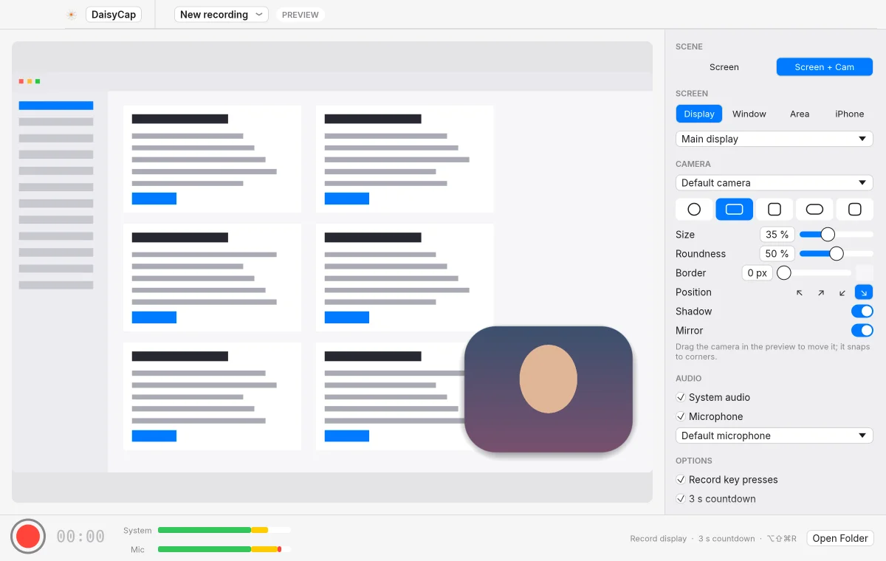
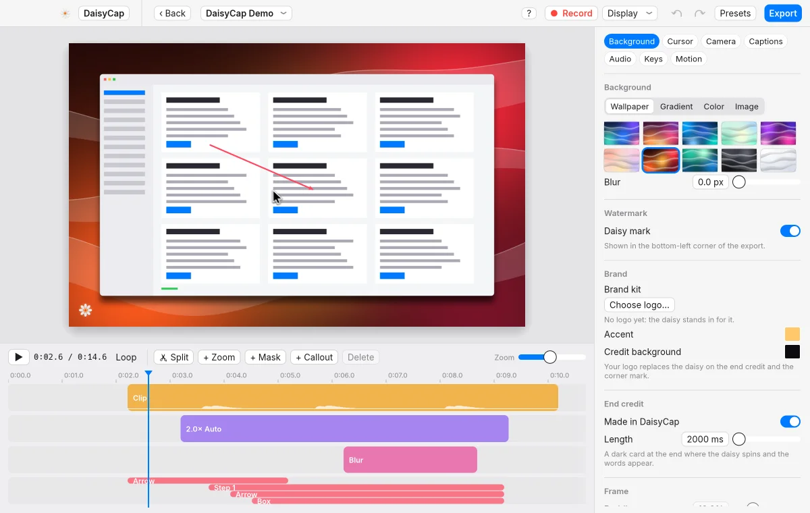
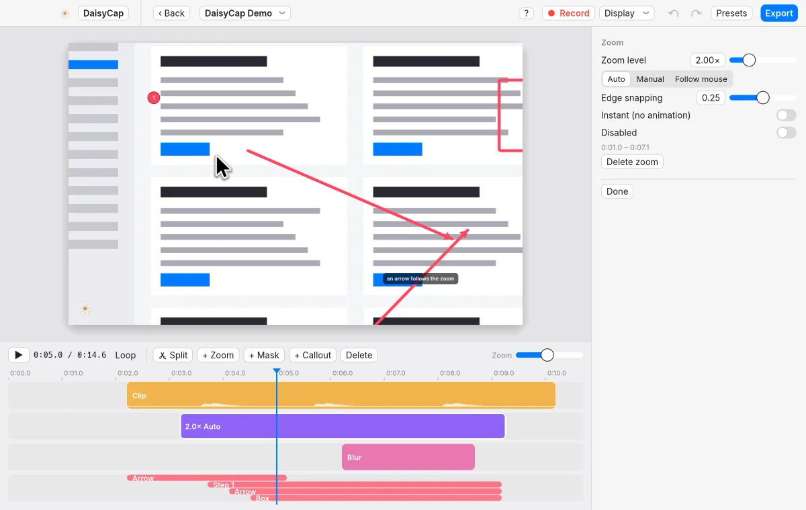
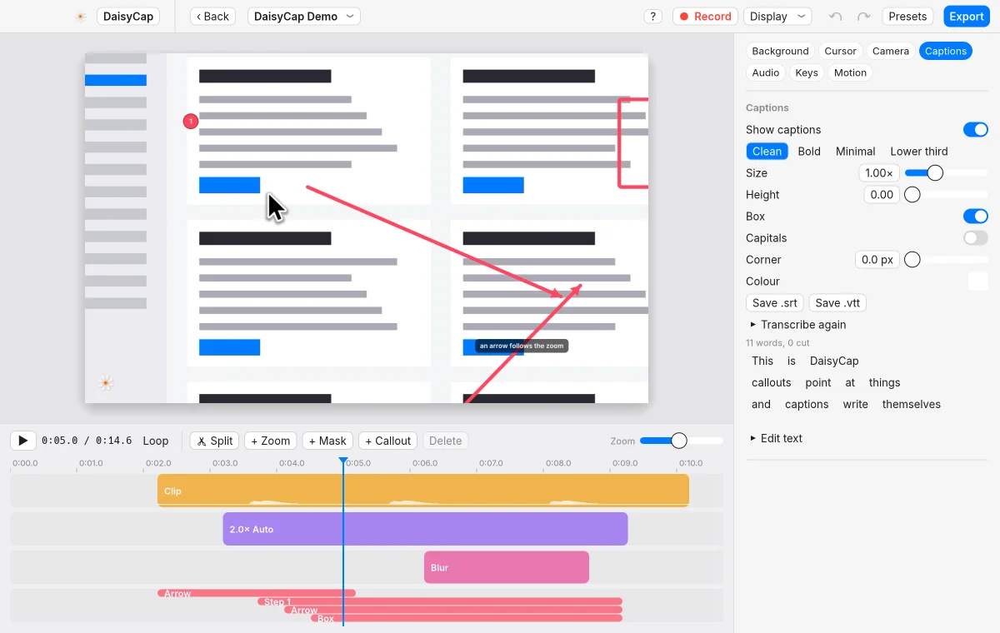
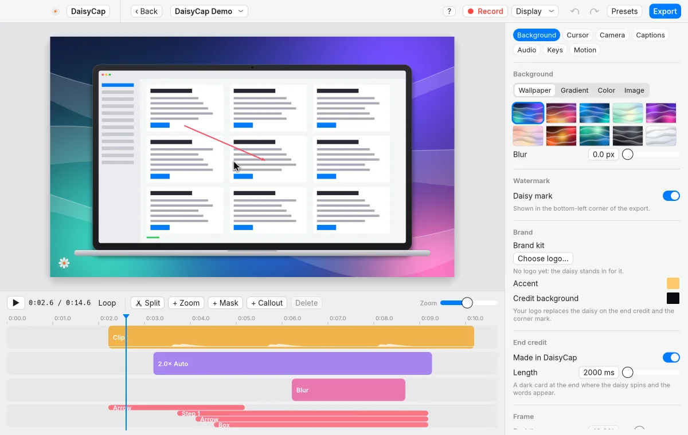
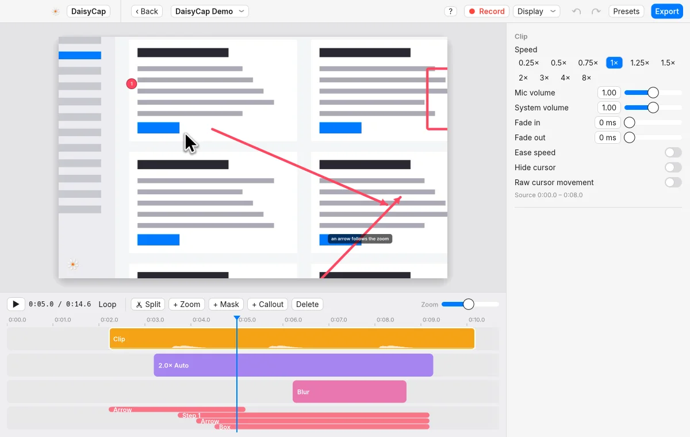
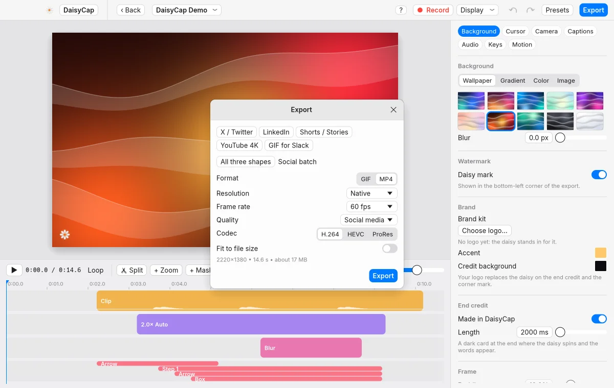
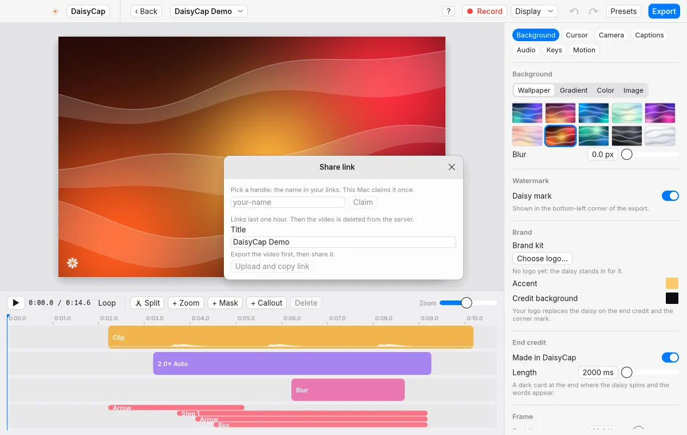

Record
Capture a display, a window or an area, with system audio and your mic.
DaisyCap records your screen, adds zooms and captions, and exports an MP4 or GIF. Recordings stay on your Mac unless you share one.


Capture a display, a window or an area, with system audio and your mic.

Zooms follow your clicks. Callouts add arrows, boxes and numbered steps.
Select words in the captions and press Delete. The video cuts there, and the gap closes.

Whisper or Apple's speech engine transcribes the audio. Edit the lines, then save .srt or .vtt.

Wallpapers, gradients and padding, with laptop, phone and tablet frames.

Cut silences, speed up typing, and ease a clip's speed in and out.

Save an MP4 or a GIF, or export 16:9, square and vertical in one go.

Upload an export and copy a link. Links last one hour, then the video is deleted.
Also in the app: blur masks, click and keyboard sounds, importing MP4 and MOV files, an end card, and a shortcut overlay.
Version 0.2.5 for macOS 14 or later, on Apple Silicon and Intel.
This build isn't notarized by Apple, so macOS stops the first launch. Open System Settings, go to Privacy & Security, and choose Open Anyway. This version doesn't check for updates by itself. To update, download the newer DMG from this page.